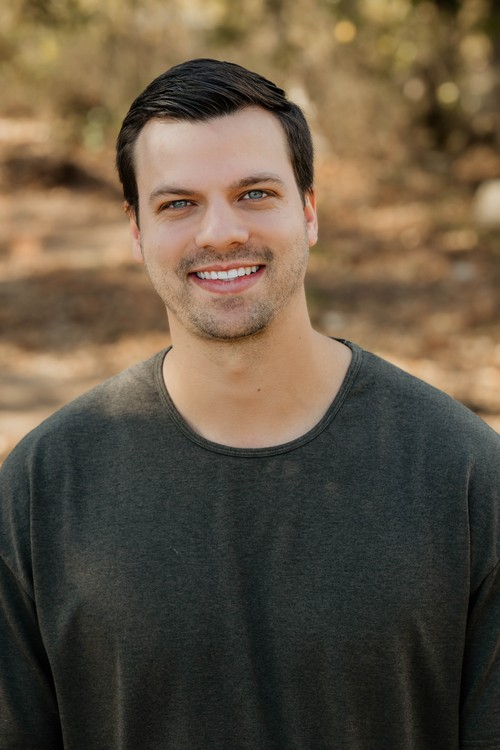

Why we started
“This place isn't made for me.”
I've watched friends I love walk into church and feel it in about thirty seconds.
Wrong clothes. Too many tattoos. Too many questions nobody wanted.
I wanted them to meet Jesus. Too much got in the way.
That's why Jessica and I started Axiom. To clear the way.
It's what I wanted for my friends. It's what I want for you.

Josiah WeeceLead Pastor